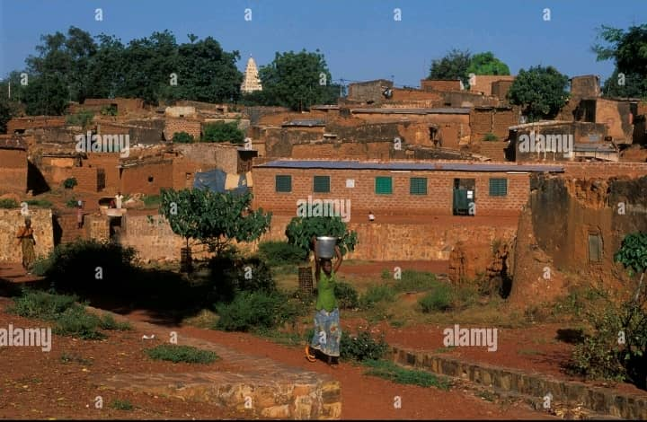
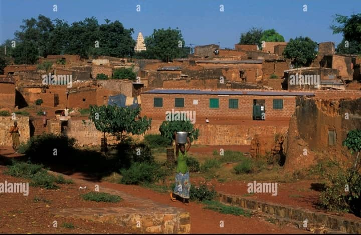

À propos de Kibidwé
Le vieux quartier de Kibidwé est l'un des plus anciens et emblématiques de Bobo-Dioulasso. Riche en histoire et en culture, il est connu pour son architecture traditionnelle en banco, ses ruelles étroites et son ambiance authentique. Ce quartier est un témoignage vivant du passé glorieux de la ville.
On y découvre des habitations ancestrales, des autels de culte animiste, et une forte cohésion communautaire où les anciens jouent un rôle important dans la transmission des traditions orales. Kibidwé est aussi réputé pour ses artisans, notamment les forgerons, sculpteurs et griots.
Une balade dans ce quartier permet de mieux comprendre l'organisation sociale traditionnelle et de plonger dans l’histoire des peuples bobo. Il est souvent recommandé de s’y faire accompagner par un guide local pour mieux en apprécier les richesses culturelles.
Galerie du quartier
 


Planifiez votre visite
Kibidwé se trouve à proximité du centre-ville. Il est accessible à pied ou en taxi-moto. La visite du quartier peut être combinée avec celle de la vieille mosquée de Bobo.
Les habitants sont très accueillants, mais il est important de respecter les lieux sacrés et de demander l’autorisation avant de prendre des photos. Des guides locaux sont disponibles pour enrichir votre visite par des récits historiques et culturels.